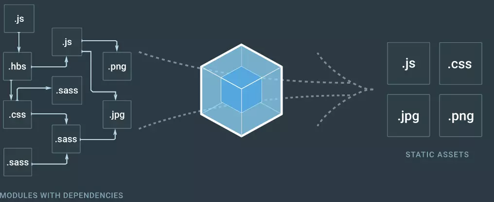

# webpack 配置
# 前言
本人平时学习及收集内容，欢迎参入一起讨论。
# 内容
# 一、介绍、安装及常用命令
- 什么是 webpack
- webpack 特点
- webpack 安装
- 常用命令
# 1.1 什么是 webpack
自从出现模块化以后，大家可以将原本一坨代码分离到个个模块中，但是由此引发了一个问题。每个 JS 文件都需要从服务器去拿，由此会导致加载速度变慢。Webpack 最主要的目的就是为了解决这个问题，将所有小文件打包成一个或多个大文件，官网的图片很好的诠释了这个事情，除此之外，Webpack 也是一个能让你使用各种前端新技术的工具。

webpack 一共经历了 4 个版本，分别是 1、2、3、4，最新版本是 4，以下案例是基于 4 实践的
# 1.2 webpack 特点
- 专注于处理模块化的项目，能做到开箱即用、一步到位；
- 可通过 Plugin 扩展，完整好用又不失灵活；
- 使用场景不局限于 web 开发；
- 社区庞大活跃，经常引入紧跟时代发展的新特性，能为大多数场景找到自己有的开源扩展；
- 良好的开发体验；
——自来《深入浅出 webpack》
# 1.3 webpack 安装
全局安装 webpack
npm install -g webpack
局部安装 webpack
npm install --save-dev webpack
# 1.4 常用命令
webpack -p 执行一次生成环境的编译（压缩）
webpack --watch 在开发时持续监控增量编译（很快）
webpack -d 让他生成SourceMaps
webpack --progress 显示编译进度
webpack --colors 显示静态资源的颜色
webpack --sort-modules-by, --sort-chunks-by, --sort-assets-by 将modules/chunks/assets进行列表排序
webpack --display-chunks 展示编译后的分块
webpack --display-reasons 显示更多引用模块原因
webapck --display-error-details 显示更多报错信息
2
3
4
5
6
7
8
9
# 二、最简单配置
# 2.1 webpack 相关参数介绍
- entry
配置模块的入口，Entry 参数说明，类型可以是以下三种中的一种或者相互组合
| 类型 | 例子 | 含义 |
|---|---|---|
| string | './app/entry' | 入口模块的文件路径，可以相对路径 |
| array | ['./app/entry1','./app/entry2'] | 入口模块的文件路径，可以是相对路径 |
| object | {a:['./app/entry-a'],b:['./app/entry-b1','./app/entry-b2']} | 配置多个入口，每个入口生成一个 chunk |
- output
配置如何输出最终想要的代码
output是一个object,里面包含一系列配置项
output.filename:'[name].js' //输出文件的名称
也可以使用hash、chunkhash、contenthash来命名，关于hash、chunkhash、contenthash区别可以参考https://www.cnblogs.com/tugenhua0707/p/9615822.html#_labe1_2
output.chunkFilename://chunkFilename 和上面的 filename 非常类似，但 chunkFilename 只用于指定在运行过程中生成的 Chunk 在输出时的文件名称，vue按需加载就可以使用这个参数
output.path：path .resolve( dirname, ’ dist [hash]’) //path 配置输出文件存放在本地的目录
output.publicPath:'https://cdn.example.com/assets/' //配置发布到线上资源的 URL 前缀
output.libraryTarget://配置以何种方式导出库，可选值var、commonjs、commonjs2、this、window、global
output.library://配置导出库的名称。
output.libraryExport: 配置要导出的模块中哪些子模块需要被导出
2
3
4
5
6
7
8
9
10
11
12
13
- module
rules配置模块的读取和解析规则，通常用来配置 Loader。大致可以通过以下方式来完成
- 条件匹配:通过
test、include、exclude三个配置项来选中Loader要应用 规则的文件。 - 应用规则：对选中的文件通过
use配置项来应用Loader，可以只应用一个Loader或者按照从后往前的顺序应用一组Loader，同时可以分别向Loader传入参数。 - 重置顺序:一组
Loader的执行顺序默认是从右到左执行的，通过enforce选项可以将其中 一个Loader的执行顺序放到最前或者最后 。
具体方法：
module:{
rules:[
{
//命中 JavaScript 文件
test: /\.js$/，
//用 babel-loader 转换 JavaScript 文件
//?cacheDirectory 表示传给 babel-loader 的参数，用于缓存 babel 的编译结果，
use : [’ babel-loader?cacheDirectory ’],
//只命中 src 目录里的 JavaScript 文件，加快 Webpack 的搜索速度
include: path.resolve( dirname, ’ src ’)
},
{
//命中scss文件
test:/\.scss$/,
//使用一组loader去处理scss文件
//处理顺序为从后到前，即先交给 sass-loader处理，再将结果交给 css-loader,最后交给 style-loader
use:['style-loader','css-loader','sass-loader'],
//排除node_modules目录下的文件
exclude: path.resolve( dirname, ’ node modules ’)
},
{
//对非文件采用file-loader加载
test:/\.(gif|png|jpe?g|eot|woff|ttf|svg|pdf)$/,
use:['file-loader']
}
]
}
2
3
4
5
6
7
8
9
10
11
12
13
14
15
16
17
18
19
20
21
22
23
24
25
26
27
- noParse
配置项可以让 Webpack 忽略对部分没采用模块化的文件的递归解析和处理，这样做的好处能提高构建性能。
//使用正则表达式
noParse: /jquerylchartjs/
2
注意，被忽略的文件里不应该包含import、require、define等模块化 语句，不 然会导致在构建出的代码中包含无法在浏览器环境下执行的模块化语句 。
- parse
parser属性可以更细粒度地配置 哪些模块语法被解析、哪些不被解析。同noParse配置项的区别在于，parser可以精确到 语法层 面，而noParse只能控制哪些文件不被解析。
parser的使用方法如下:
module: {
rules : [
{
test: /\.js♀/，
use: [ ’ babel-loader ’],
parser: {
amd: false， //禁用AMD
commonjs : false , //禁用 CommonJS
system : false, //禁用 SystemJS
harmony: false， //禁用 ES6 import/export
requireinclude:false, //禁用require.include
requireEnsure: false, //禁用require.ensure
requireContext:false, //禁用require.context
browserify: false, //禁用 browserify requireJs : false, //禁用 requirejs:false
requireJs : false, //禁用 requirejs
}
}
]
}
2
3
4
5
6
7
8
9
10
11
12
13
14
15
16
17
18
19
- resolve
配置寻找模块的规则
配置项通过别名来将原导入路径映射成一个新的导入路径
resolve:{
alias:{
components:'./src/components/'
}
}
2
3
4
5
6
7
- mainFields
会根据mainFields的配 置去决定 优先采用哪份代码，
mainFields : [’jsnext:main’,’browser’,’main’]
- extensions
Webpack 会自动带上后缀后去尝试访问文件是否存在。 resolve.extensions 用于配置在尝试过程中用到的后缀列表
extensions:[’.ts’,’.j5 ’,’.json’]
- plugins
配置扩展插件
plugins 配置项接收一个数组，数组里的每一项都是一个要使用 的 Plugin 的实例， Plugin 需要的参数通过构造函数传入,mini-css-extract-plugin、clean-webpack-plugin、DllReferencePlugin、html-webpack-plugin、happyPack、webpack-parallel-uglify-plugin
const ClearWebpackPlugin = require('clean-webpack-plugin');
module.exports=[
plugins:[
new ClearWebpackPlugin(['dist'])
]
];
2
3
4
5
6
7
DevServer
hot,开启模块热替换功能后，将在不刷新整个页面的情况下通过用新模块替换老模块来做到实时预览inline,依赖一个注入页面里的代理客户端，去接收来自 DevServer 的 命令并负责刷新网页的工作。contentBase,配置 DevServerHTTP 服务器的文件根目录
# 三、webpack 配置
const path = require('path');
const webpack = require('webpack');
const HtmlWebpackPlugin = require('html-webpack-plugin');
const MiniCssExtractPlugin = require("mini-css-extract-plugin");
const ClearWebpackPlugin = require('clean-webpack-plugin');
const DllReferencePlugin = require('webpack/lib/DllReferencePlugin');
const ParallelUglifyPlugin = require('webpack-parallel-uglify-plugin');
const HappyPack = require('happypack');
module.exports = {
entry: './app/index/app.js', //支持多个参数，string|array|object
output: {
filename: ' [name].js', //输出文件名称
path: path.resolve(__dirname, './dist'), //输出文件的目标路径
publicPath: '/' //构建文件的输出目录
},
devServer: { //DevServer相关的配置
contentBase: path.join(__dirname, 'dist'),
compress: true, //压缩
port: 8888, //端口号
open: true, //第一次打开浏览器
hot: true, //是否监听
publicPath: "/" //访问的目录
},
module: {
rules: [{
test: /\.js$/,
use: [' babel-loader'],
parser: {
amd: true, //禁用AMD
commonjs: true, //禁用 CommonJS
system: false, //禁用 SystemJS
harmony: true, //禁用 ES6 import/export
requireinclude: false, //禁用require.include
requireEnsure: false, //禁用require.ensure
requireContext: false, //禁用require.context
browserify: false, //禁用 browserify requireJs : false, //禁用 requirejs:false
requireJs: false, //禁用 requirejs
}
},
{
// 用正则去匹配要用该 loader 转换的 CSS 文件
test: /\.css$/,
use: [{
loader: MiniCssExtractPlugin.loader,
}, {
loader: path.resolve('./loaders.js'),
options: {
test: 1
}
}, {
loader: 'css-loader?minimize',
}, {
loader: 'postcss-loader',
options: {
ident: 'postcss',
plugins: [
require('postcss-cssnext')(),
require('cssnano')(),
require('postcss-sprites')()
]
}
}],
}, {
//图片处理
test: /\.(png|svg|jpg|gif)$/,
use: [{
loader: 'url-loader',
options: {
limit: 10000,
name: '[name].[ext]'
}
}]
}
]
},
resolve: {
modules: [
// 模块的查找目录
"node_modules",
path.resolve(__dirname, "app")
],
extensions: ['.js', '.json', '.vue', '.css'],
alias: { //模块别名列表
'module': 'new-module'
}
},
devtool: 'source-map', //sourcemap
plugins: [ //插件部分
new ClearWebpackPlugin(['dist']),
new MiniCssExtractPlugin({
// Options similar to the same options in webpackOptions.output
// both options are optional
filename: `[name]_[contenthash:8].css`,
chunkFilename: '[name]_[contenthash:8].css'
}),
// 告诉webpack使用了哪些第三方库代码
new DllReferencePlugin({
// jquery 映射到json文件上去
manifest: require('./dill/jquery.manifest.json')
}),
new ParallelUglifyPlugin({
// 传递给 UglifyJS的参数如下：
uglifyJS: {
output: {
/*
是否输出可读性较强的代码，即会保留空格和制表符，默认为输出，为了达到更好的压缩效果，
可以设置为false
*/
beautify: false,
/*
是否保留代码中的注释，默认为保留，为了达到更好的压缩效果，可以设置为false
*/
comments: false
},
compress: {
/*
是否在UglifyJS删除没有用到的代码时输出警告信息，默认为输出，可以设置为false关闭这些作用
不大的警告
*/
warnings: false,
/*
是否删除代码中所有的console语句，默认为不删除，开启后，会删除所有的console语句
*/
drop_console: true,
/*
是否内嵌虽然已经定义了，但是只用到一次的变量，比如将 var x = 1; y = x, 转换成 y = 5, 默认为不
转换，为了达到更好的压缩效果，可以设置为false
*/
collapse_vars: true,
/*
是否提取出现了多次但是没有定义成变量去引用的静态值，比如将 x = 'xxx'; y = 'xxx' 转换成
var a = 'xxxx'; x = a; y = a; 默认为不转换，为了达到更好的压缩效果，可以设置为false
*/
reduce_vars: true
}
}
}),
//将js自动插入到html里
new HtmlWebpackPlugin({
template: './views/index.html',
filename: 'index.html',
}),
new webpack.HotModuleReplacementPlugin() //引入热更新插件
]
};
2
3
4
5
6
7
8
9
10
11
12
13
14
15
16
17
18
19
20
21
22
23
24
25
26
27
28
29
30
31
32
33
34
35
36
37
38
39
40
41
42
43
44
45
46
47
48
49
50
51
52
53
54
55
56
57
58
59
60
61
62
63
64
65
66
67
68
69
70
71
72
73
74
75
76
77
78
79
80
81
82
83
84
85
86
87
88
89
90
91
92
93
94
95
96
97
98
99
100
101
102
103
104
105
106
107
108
109
110
111
112
113
114
115
116
117
118
119
120
121
122
123
124
125
126
127
128
129
130
131
132
133
134
135
136
137
138
139
140
141
142
143
144
145
146
147
148
# 四、实际应用
- 编译 ES6/7
- 编译打包 TS
- 提取公用代码
- 代码分割和懒加载
- 处理 css:style-loader
- 处理 css:style-loader
- 配置 less/sass
- postcss-in-webpack
- tree-shaking
- 配置 eslint
- 配置 stylelint
- mock 使用
# 4.1 编译 ES6/7
首先我们要安装babel编译文件npm install -- save-dev babel-loader babel-core同时还需要安装npm install babel-preset-env --save-dev这个时候，给webpack.config.js一个基础配置：
module.exports = {
entry: {
app: './app.js'
},
output: {
filename: "[name].[hash:8].js"
},
module: {
rules: [
{
test: /\.js$/,
use: 'babel-loader',
exclude: '/node_modules/'
}
]
}
};
2
3
4
5
6
7
8
9
10
11
12
13
14
15
16
17
18
babel配置文件的写法：
{
"presets": [
[
"env",
{
"targets": {
"browsers": [
"> 1%",
"last 2 versions"
]
}
}
]
],
"plugins": ["transform-runtime"]
}
2
3
4
5
6
7
8
9
10
11
12
13
14
15
16
具体配置可以查看babel 学习
# 参考资料
- 《深入浅出 webpack》
- 由浅入深 Webpack
- 搜罗一切 webpack 的好文章好工具
- 关于 webpack4 的 14 个知识点,童叟无欺
- 一文搞懂 Webpack 多入口配置
- 一步步从零开始用 webpack 搭建一个大型项目
- 【Cute-Webpack】Webpack4 入门手册（共 18 章）
- webpack 工程师的自我修养
- Webpack 深入浅出之公司级分享总结(内附完整 ppt)
- 2020 年了,再不会 webpack 敲得代码就不香了(近万字实战)
- 从构建进程间缓存设计 谈 Webpack5 优化和工作原理
- Webpack Tree shaking 深入探究
- webpack 的多页应用脚手架
- 利用 webpack 搭建脚手架一套完整流程
# 联系作者
平凡世界，贵在坚持。

← 私有 npm 仓库搭建 babel 学习 →